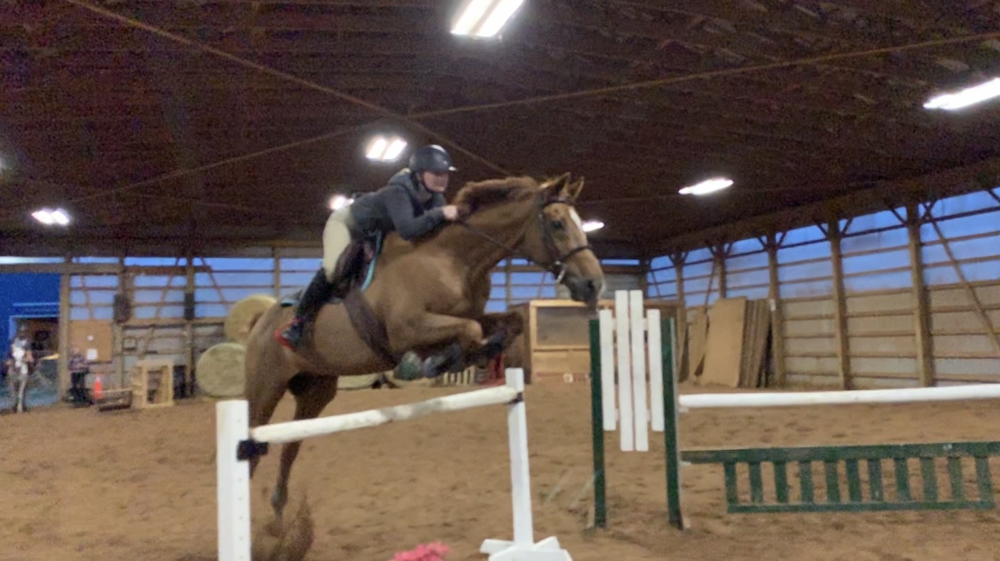
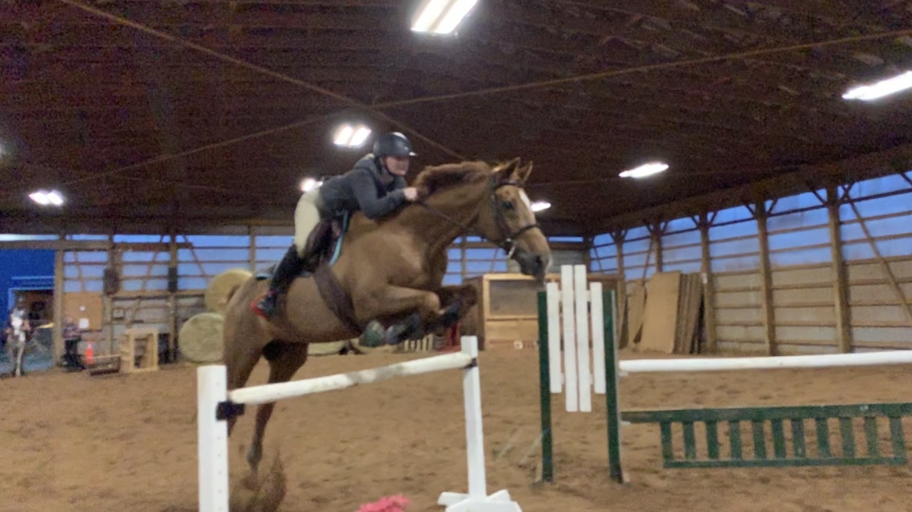
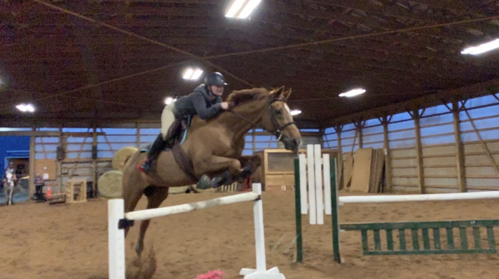

See more information on..
Meet Oatie! Oatie also known as Great Win from his race track days. Oatie is a 2001 chestnut thoroughbred gelding. He began his life as a race horse and his career consisted of 36 starts from 2003- 2006. He brought home five firsts/seconds and six thirds, finishing his career with just over 100,000 dollars in earnings. After his track days he moved around from home to home where he started to learn how to be a jumper. Around 2 years ago he landed in the hands of his current owner who does jumpers and eventing with him. Oatie is extremely talented when it comes to jumping, he absolutely loves it, especially the big fences! I met Oatie in February 2021, when I was on a search for a horse to lease after moving down to the Niagara region. I tried a few horses before Oatie but when I tried him I knew he was the one. We have spent the last almost year getting to know each other through taking lessons and going to a few shows. He certainly is not an easy horse. We have had our fair share of ups and downs (literally ending up on the ground downs) but when we have our ups they really are the most rewarding. We found ourselves in the show ring this past summer where we showed in the 2ft6 hunters and ended up first overall. Oatie has taken me over my personal record jump height which was 3ft9! Terrifying but also the most amazing feeling too. I have grown to really love this big silly boy and take all of his little temper tantrums with a laugh (as he can have a lot of meltdowns when he can't just go as fast as he wants). I look forward to more months of memories with this boy!

For more pictures of Oatie check out her instagram Hashtag #GreatWinAKAOatie